พระราชกรณียกิจ
ด้านสาธารณสุข
main.jpg
ขนาดแนะนำ: 600 x 850 px (แนวตั้ง)
img1.jpg550 x 380 px
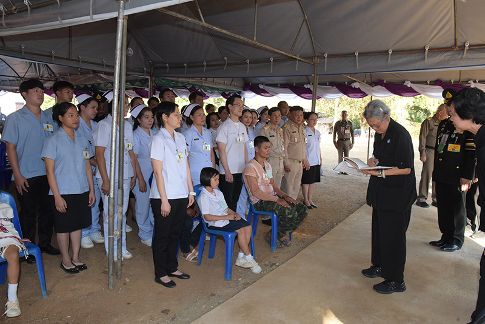
img2.jpg550 x 380 px
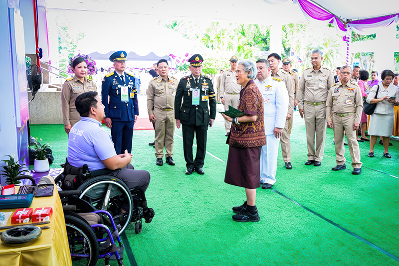
img3.jpg
ขนาดแนะนำ: 1120 x 400 px (แนวนอนเดี่ยว)
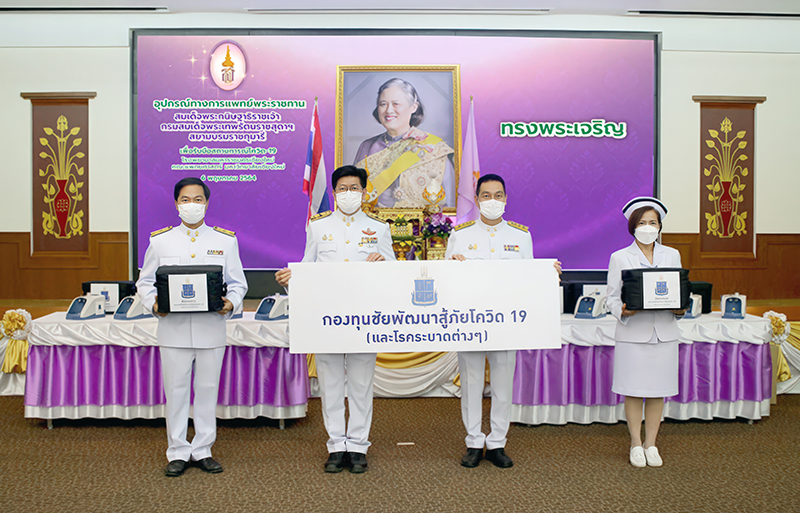
img4.jpg550 x 380 px
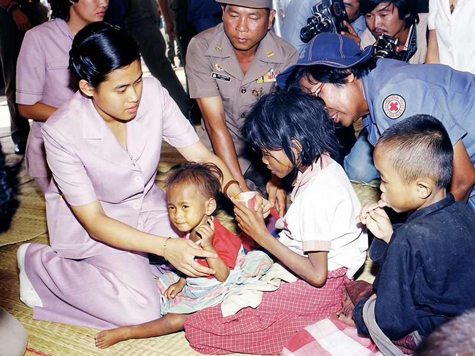
img5.jpg550 x 380 px
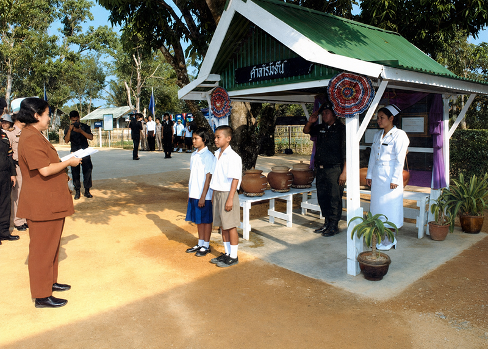
img6.jpg550 x 380 px
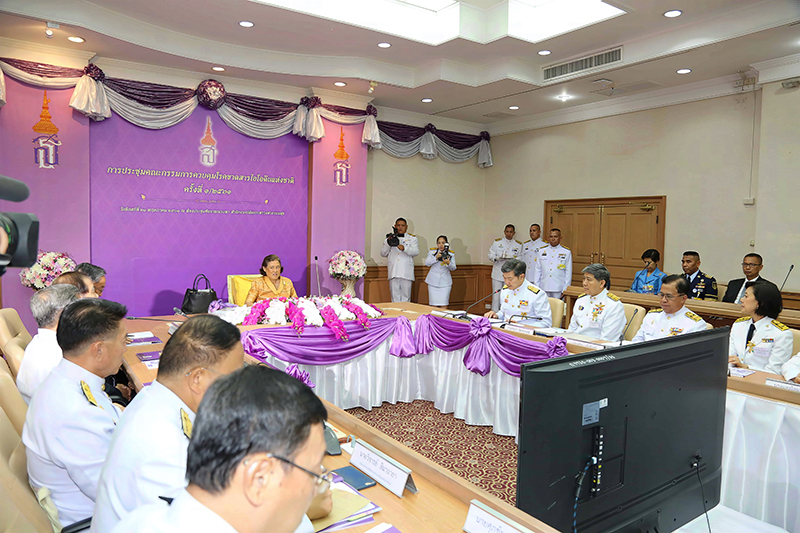
img7.jpg550 x 380 px
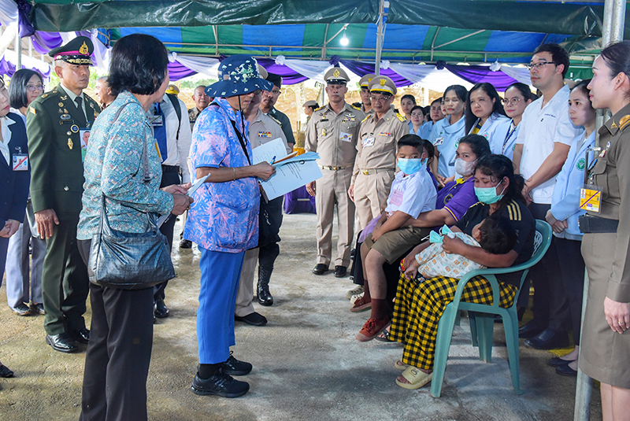
“...เช้าวันหนึ่ง ใน พ.ศ. ๒๕๓๓ ข้าพเจ้าเปิดวิทยุกระจายเสียงแห่งประเทศไทย มีบทความของกระทรวงสาธารณสุขเรื่องโรคเอ๋อ ซึ่งเกิดจากการขาดธาตุไอโอดีน ข้าพเจ้านึกไปถึงเมื่อสิบปีก่อน ข้าพเจ้าเคยตามเสด็จฯ ไปที่หมู่บ้านไกล ๆ แถวจังหวัดแม่ฮ่องสอน มีหมู่บ้านที่คนเกือบทั้งหมู่บ้านดูเป็นคนมีสติไม่สมประกอบ เป็นภาระของคนปกติ ข้าพเจ้าคิดว่าโรคเอ๋อคงเป็นอย่างนี้เอง ต่อจากนั้นข้าพเจ้าได้ไปเยี่ยมโรงเรียนตำรวจตระเวนชายแดนในเขตที่มีการขาดสารไอโอดีนมาก ได้หารือกับอาจารย์ไพวรรณ อาจารย์พิสิษฐ์ คุณกิตติ (สำนักพระราชวัง) ว่า เราจะพอมีทางบรรเทาปัญหานี้อย่างไรบ้าง โดยจะเริ่มต้นงานในโรงเรียน ตชด. ตามเคย คณะทำงานก็ได้ไปศึกษาแนวทางในการทำงาน การออกสำรวจและหาข้อมูลซึ่งก็ไม่ง่ายนัก เนื่องจากขาดสถิติภาคกลางและภาคใต้ ซึ่งเราไปสำรวจกันเอง ฝึกอบรมให้ครู ตชด. ตรวจนักเรียน แนะนำการใช้ไอโอดีนหยดในน้ำ ใช้เกลือไอโอดีนโรงเรียน ตชด. ที่สำรวจกันนั้น จำนวนนักเรียนขาดสารไอโอดีนเกิน ๗๐ – ๘๐ % ถึง ๑๐๐% ก็มี ถึงจะมีปัญหาอุปสรรคมากมาย ในสามปีที่เราพยายามแก้ไขปัญหาลดลงได้มาก ในบางจุดเจ้าหน้าที่สาธารณสุขแก้ด้วยการให้ยาเม็ดแก่หญิงมีครรภ์ และเด็กนักเรียน ๖ เดือนต่อครั้ง ปรากฏว่าได้ผลดี แต่ก็คงไม่ได้ตามเป้าของ กระทรวงสาธารณสุขที่จะแก้ปัญหาให้ได้ภายใน ๔ ปีข้างหน้า จะได้แค่ไหนก็ตาม ก็ถือว่าเรามีส่วนร่วมในการแก้ปัญหาระดับชาตินี้...”
สมเด็จพระกนิษฐาธิราชเจ้า กรมสมเด็จพระเทพรัตนราชสุดา ฯ สยามบรมราชกุมารี
พระราชทานบทความนี้ เพื่อลงพิมพ์ในหนังสือ “๔๐ ปี โรงเรียน ตชด.” เมื่อวันที่ ๒๗ มีนาคม พ.ศ. ๒๕๓๙
img8.jpg550 x 380 px
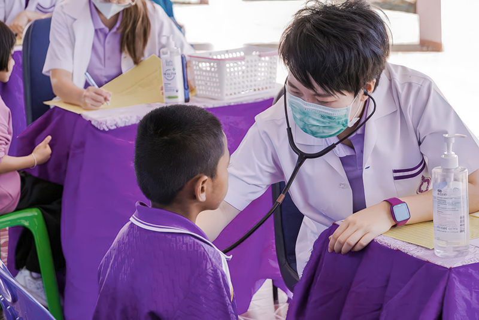
img9.jpg550 x 380 px
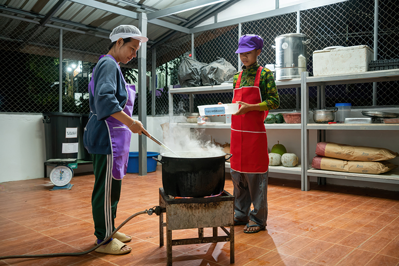
โครงการส่งเสริมโภชนาการและสุขภาพอนามัยแม่และเด็กในถิ่นธุรกันดารตามพระราชดำริ ได้ดำเนินการอย่างต่อเนื่องภายใต้โครงการอันเนื่องมาจากพระราชดำริด้านการศึกษา เนื่องจากปัญหาด้านสาธารณสุขเป็นพื้นฐานสำคัญของเด็กและเยาวชน เพราะเด็กจะเรียนหนังสือไม่ได้ ถ้าท้องหิว หรือเจ็บป่วย เช่น โครงการเกษตรเพื่ออาหารกลางวัน ที่มุ่งให้เด็กได้รับอาหารที่มีคุณค่า มีสารอาหารเหมาะสม เพื่อให้ร่างกายแข็งแรงเติบโตอย่างมีคุณภาพ โครงการส่งเสริมพัฒนาการเด็กปฐมวัยในพื้นที่ทุรกันดาร และโครงการควบคุมโรคขาดสารไอโอดีนที่ช่วยป้องกันโรคเอ๋อ และโรคคอพอก
img10.jpg550 x 380 px
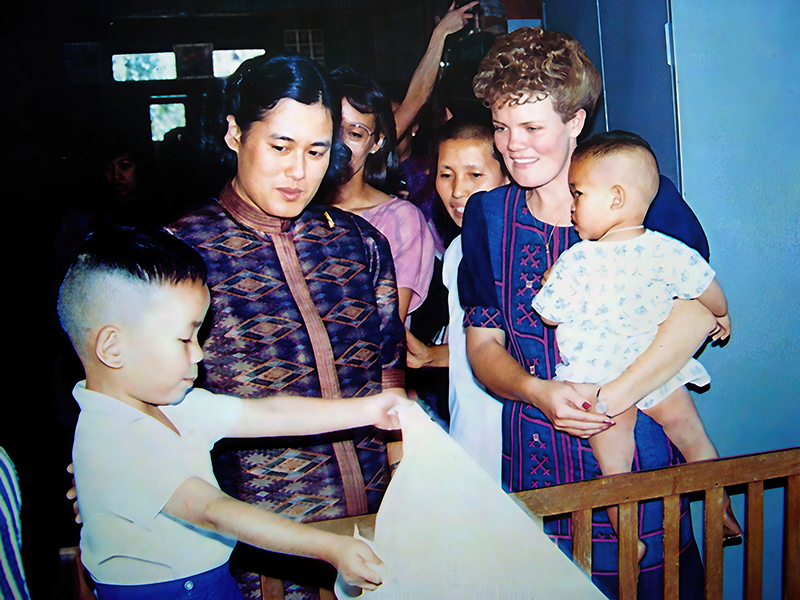
img11.jpg550 x 380 px
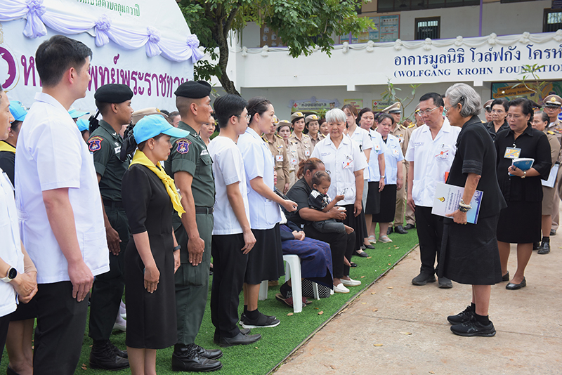
พ.ศ. ๒๕๓๕ หน่วยแพทย์พระราชทาน
ด้วยเสด็จพระราชดำเนินไปในพื้นที่ทุรกันดารบ่อยครั้ง ทำให้ทรงพบเห็นราษฎร
ที่เจ็บป่วยแต่ไม่มีโอกาสได้รับการรักษาจากแพทย์ เนื่องจากไม่มีแพทย์เข้าไปถึง จึงมีพระราชดำริให้จัดตั้งหน่วยแพทย์พระราชทานขึ้นใน พ.ศ. ๒๕๓๕ และทรงให้หน่วยแพทย์พระราชทานออกปฏิบัติงานทุกครั้งที่เสด็จพระราชดำเนินไปทรงปฏิบัติพระราชกรณียกิจในพื้นที่ทุรกันดารห่างไกล โดยเจ้าหน้าที่ของโครงการส่วนพระองค์จะจัดเตรียมยาและเวชภัณฑ์พระราชทาน พร้อมทั้งประสานหน่วยต่าง ๆ เข้าร่วมปฏิบัติงาน ประกอบด้วย แพทย์ ทันตแพทย์ เภสัชกร พยาบาล เจ้าหน้าที่สาธารณสุข หรือคณะแพทยศาสตร์ และคณะทันตแพทยศาสตร์ในสังกัดมหาวิทยาลัย เพื่อให้บริการทางการแพทย์แก่ประชาชนโดยไม่คิดมูลค่า ทั้งการตรวจรักษาโรคทั่วไป โรคทางทันตกรรม การส่งเสริมและฟื้นฟูสุขภาพอนามัยของเด็กนักเรียน และการป้องกันการเจ็บป่วยด้วยการให้ความรู้ และวัคซีน
ป้องกันโรค อีกทั้งยังพิจารณารับผู้ป่วยที่มีความจำเป็นต้องส่งต่อเพื่อการรักษาเป็นผู้ป่วยในพระราชานุเคราะห์
img12.jpg550 x 380 px
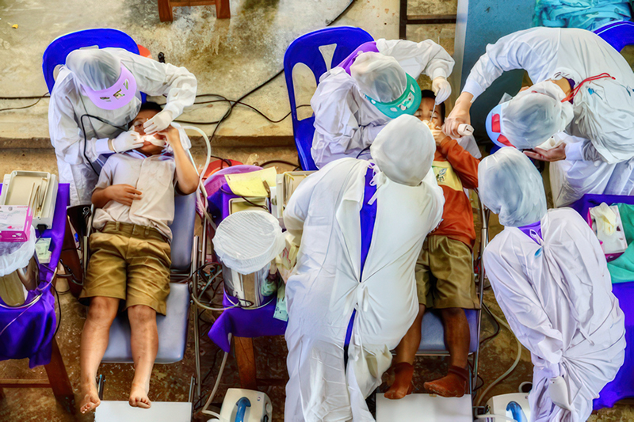
img13.jpg550 x 380 px
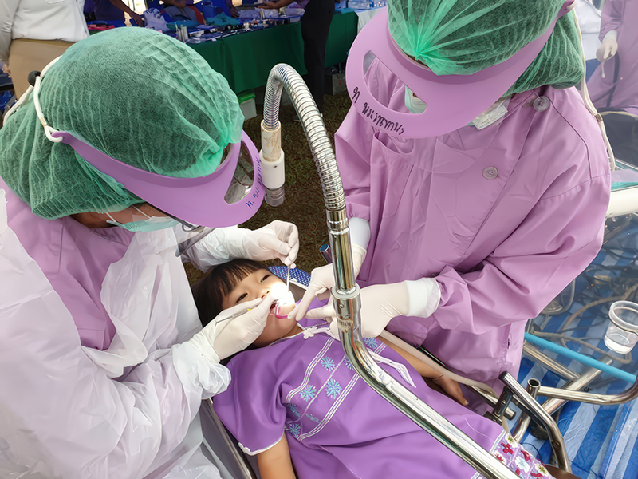
พ.ศ. ๒๕๓๖ กองทุนพระราชทานเพื่อสงเคราะห์คนไข้ยากจน
หลังจากหน่วยแพทย์พระราชทานออกปฏิบัติงานได้ประมาณ ๑ ปี ใน พ.ศ. ๒๕๓๖ ได้มีพระราชดำริให้จัดตั้ง “กองทุนพระราชทานเพื่อสงเคราะห์คนไข้ยากจนในสมเด็จ
พระเทพรัตนราชสุดา ฯ สยามบรมราชกุมารี” ขึ้น ด้วยมีพระราชประสงค์ให้โรงพยาบาล
มีเงินทุนที่จะช่วยเหลือคนไข้ยากจน ทั้งค่ารักษาพยาบาล ค่ายา ค่าเดินทาง ค่าอาหาร รวมทั้งค่าเครื่องมือและอุปกรณ์สำหรับตรวจโรค พร้อมกับส่งเสริมให้ผู้มีจิตศรัทธาได้ร่วม
สมทบในกองทุนฯ ด้วย โดยเริ่มจากพระราชทานเงินให้โรงพยาบาลที่มาร่วมปฏิบัติงานออกหน่วยแพทย์พระราชทานนำไปจัดตั้งกองทุนขึ้นที่โรงพยาบาลนั้น
ปัจจุบันมีกองทุนพระราชทานเพื่อสงเคราะห์คนไข้ยากจนฯ จัดตั้งขึ้นที่โรงพยาบาลทั่วประเทศทั้งหมด ๔๘๒ แห่ง